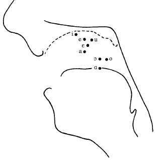

A Course in Phonetics
1 Articulation and Acoustics§
肺部鼓气，唇舌调节
声带窄而震 voiced
声带宽不震 voiceless
喉上 vocal tract 分 oral 和 nasal
语音机制四组件 气流、发声、口鼻、调音
语音传播靠声波
调音部位 labial 唇 coronal 舌冠 dorsal 舌背
调音方式 stop nasal fricative approximant lateral trill tap affricate
辅音五要素 声带状态 调音部位 中央/边缘调音 软腭状态 调音方式
元音三要素 舌体高度 舌头前后位置 圆唇程度
元音相区别 共振峰(特征泛音)
第一共振峰 creaky 第二共振峰 whispering
英语重音 增加响度 夸张音段 夸张音调
2 Phonology and Phonetic Transcription§
音位 phoneme 同位音 allophone
转写 broad narrow
3 The Consonants of English§
阻音 obstruent
- 不带音：元音短、辅音长
- 带音：元音长、辅音短
两者都影响元音长度、都受毗邻是否带音的影响
塞擦音 tʃ dʒ 具有音系学意义
美式 l 带软腭化 英式元音前不带软腭化
ʍ 越来越少见
- 短语末尾的辅音较长
- 音节首的不带音塞音(如/p, t, k/)送气
- 阻音(如/b, d, ɡ, v, ð, z, ʒ/)在词尾或不带音前带音
- 所谓塞音和塞擦音(/b, d, ɡ, dʒ/)在词首不带音除非之前有带音
- 不带音塞音(/p, t, k/)在/s/之后不送气
- 不带音阻音(/p, t, k, tʃ, f, θ, s, ʃ/)在词尾比对应带音阻音(/b, d, ɡ, dʒ, v, ð, z, ʒ/)长
- 近音(/w, r, j, l/)在词首/p, t, k/之后至少部分不带音
- 连续塞音姿势叠加，塞音在塞音之前不爆破
- 多数英语口音中，音节尾/p, t, k/伴随喉塞姿势
- 多数英语口音中，/t/在齿龈鼻音前被喉塞音替代
- 鼻音在词尾若紧跟阻音可以自成音节
- 边音/l/在词尾若紧跟辅音可以自成音节
- 流音/l, r/在词尾若紧跟辅音可以自成音节
- 齿龈塞音在两个元音(后一个非重音)之间变为带声闪音
- 齿龈塞音和齿龈鼻音加塞音在两个元音(后一个非重音)之间变为带声闪音
- 连续塞音姿势叠加，齿龈辅音在齿辅音前变为齿音
- 齿龈塞音在两个辅音之间简化或省略
- 同一个词中，同部位清塞音可出现在鼻音与不带声擦音之间，该擦音之后为非重音元音
- 辅音在同一个辅音之前缩短
- 软腭塞音在前元音之前变得更靠前
- 边音/l/在元音之后或词尾辅音之前软腭化
4 English Vowels§
元音音质空间 高/低 前/后
听觉音质≠舌位
卷舌元音ɝ有两种发音方法
口音差异 系统 分布 音质
松紧元音 silent e
- 其他条件相同时，元音长度：开音节>以带声辅音结尾>以不带声辅音结尾
- 其他条件相同时，元音长度：重读音节>非重读音节
- 其他条件相同时，元音长度：单音节词>双音节词>多于双音节词
- 简化元音在不带声塞音前或者后可能不带声
- 元音在以鼻音结尾的音节之前鼻化
- 元音在[ɫ]之前回撤
5 English Words and Sentences§
重音等级
音节{重读{腔调重读;非腔调重读};非重读{非简化元音;简化元音}}
形成三级 tonic accent/stress/full vowel
6 Airstream Mechanisms and Phonation Types§
气流/方向/名称
pulmonic/egressive/plosive
glottalic/egressive/ejective
glottalic/ingressive/implosive
velaric/ingressive/click
声带张开的尺寸和时机影响不带声不送气、不带声送气、带声气声塞音
7 Consonantal Gestures§
调音部位
bilabial双唇 labiodental唇齿 dental齿 alveolar龈 retroflex卷舌 palato-alveolar腭龈 palatal硬腭 velar软腭 uvular小舌 pharyngeal喉 labial velar唇软腭协同
调音方式
nasal (stop)鼻音 (oral) stop塞音 fricative擦音 approximant近音 trill颤音 tap闪音 flap拍音
lateral边~音 central央~音
辅音描述
- 气流机制
- 气流方向
- 声门状态
- 牵涉舌部
- 调音部位
- 是边是央
- 是口是鼻
- 调音方式
8 Acoustic Phonetics§
高频、低频分量的直观认识
Source/Filter理论 等径管假设共振峰公式 Fn = (2n-1)*c/4L 式中L指vocal tract实际resonating portion部分的长度
vocal tract的共振(resonance)独立于vocal fold的震动(vibration)频率
tube model & perturbation theory
压力(P)极大值导致频率↗ 速度(V)极大值导致频率↘
ə glottis lips
F1 P V
F2 P V P V
F3 P V P V P V
spectrogram 宽带 窄带
F1-F2 plot Bark scale
元音高低由F1指示
F1与F2越接近则元音越後
辅音
locus
voice bar
velar pinch F2与F3接近的状态
能量 塞音t>k>p 擦音最高
基频 谐波
speech-synthesis speech-recognition voice-prints
9 Vowels and Vowel-like Articulations§
元音图 F1—(F2-F1) plot
超左上角[i]为硬颚音[ʝ] 超右下角[ɑ]为喉音[ʕ]
定位元音(cardinal vowel) by Daniel Jones
auditorily equidistant step
元音高度≠元音舌位高度

唇部动作 protruded/compressed
充分感知分别(sufficient perceptual separation)原则
前元音加圆唇减少高阶共振峰
后元音减圆唇增加高阶共振峰
如要最大化元音差异则需前元音非圆唇而后元音圆唇
ATR区分元音宽(+)窄(-)
元音R化(rhotacization)导致F3降低
元音音质小结 高度 height/后度 backness/rhotacization R化/rounding 圆唇度/ATR 咽宽/nasalization 鼻化
syllabic和vocoid两个维度 元音属于syllabic vocoid/半元音属于nonsyllabic vocoid/辅音属于nonvocoid
次要调音 [ʲ] palatalization (硬)颚(音)化/[ˠ] velarization 软颚(音)化/[ˤ] pharyngealization 咽(音)化/[ʷ] labialization 唇(音)化
10 Syllables and Suprasegmental Features§
响度(sonority)序列 低元音>高元音>鼻音>带声擦音>不带声擦音>不带声塞音
音节的响度/显著度理论
音节的语音计划单元说
语音技术的音节划分算法倾向于最大化onset而不是coda
重音分语言 variable word stress可变单词重音/fixed word stress固定单词重音/fixed phrase stress固定短语重音
用PVI(pairwise variability index)测量重音时机(stress timing)的强弱
音高(pitch) 影响词义叫音调(tone) 影响句法叫腔调(intonation)
single pitch target vs characteristic pitch movement
11 Linguistic Phonetics§
特征层级(feature hierarchy)
1 segment
1.1 supra-laryngeal
1.1.1 place
1.1.1.1 labial
1.1.1.1.1 bilabial
1.1.1.1.2 labiodental
1.1.1.2 coronal
1.1.1.2.1 dental
1.1.1.2.2 alveolar
1.1.1.2.3 palato-alveolar
1.1.1.2.4 retroflex
* coronal more elaborate
1.1.1.2.1 laminal
1.1.1.2.1.1 linguo-labial
1.1.1.2.1.2 interdental
1.1.1.2.1.3 laminal dental
1.1.1.2.1.4 laminal alveolar
1.1.1.2.1.5 laminal post-alveolar = palato-alveolar
1.1.1.2.2 apical
1.1.1.2.2.1 apical dental
1.1.1.2.2.2 apical alveolar
1.1.1.2.2.3 apical post-alveolar
1.1.1.2.3 sub-apical
1.1.1.2.3.1 sub-apical palatal = retroflex
* coronal
1.1.1.3 dorsal
1.1.1.3.1 palatal
1.1.1.3.2 velar
1.1.1.3.3 uvular
1.1.1.4 radical
1.1.1.4.1 pharyngeal
1.1.1.4.2 epiglottal
1.1.1.5 glottal
1.1.1.5.1 glottal
1.1.2 manner
1.1.2.1 aperture
1.1.2.1.1 stop
1.1.2.1.1.1 stop
1.1.2.1.2 fricative
1.1.2.1.2.1 sibilant
1.1.2.1.2.2 nonsibilant
1.1.2.1.3 approximant
1.1.2.1.4 vowel
* vowel and approximant dominated
1.1.2.1.3-4.1 height
1.1.2.1.3-4.1..1 high
1.1.2.1.3-4.1..2 mid-high
1.1.2.1.3-4.1..3 mid
1.1.2.1.3-4.1..4 mid-low
1.1.2.1.3-4.1..5 low
1.1.2.1.3-4.2 backness
1.1.2.1.3-4.2..1 front
1.1.2.1.3-4.2..2 central
1.1.2.1.3-4.2..3 back
1.1.2.1.3-4.3 rounding
1.1.2.1.3-4.3.1 protrusion
1.1.2.1.3-4.3.1.1 protruded
1.1.2.1.3-4.3.1.2 retracted
1.1.2.1.3-4.3.2 compression
1.1.2.1.3-4.3.2.1 compressed
1.1.2.1.3-4.3.2.2 separated
1.1.2.1.3-4.4 tongue root
1.1.2.1.3-4.4..1 +ATR
1.1.2.1.3-4.4..2 -ATR = pharyngealized
1.1.2.1.3-4.5 rhotic
1.1.2.1.3-4.5..1 rhotacized
* vowel and approximant
1.1.2.2 tap
1.1.2.2..1 tap
1.1.2.3 trill
1.1.2.3..1 trill
1.1.3 nasality
1.1.4 laterality
1.2 laryngeal
1.1.4.1 glottal stricture
1.1.4.1.1 voiceless
1.1.4.1.2 breathy voice
1.1.4.1.3 (modal) voice
1.1.4.1.4 creaky voice
1.1.4.1.5 closed
1.1.4.2 glottal timing
1.1.4.2.1 aspirated
1.1.4.2.2 unaspirated
1.1.4.3 glottal movement
1.1.4.3.1 raising
1.1.4.3.2 stationary
1.1.4.3.3 lowering
1.3 airstream
1.3.1 pulmonic
1.3.1.1 modal airstream
1.3.2 velaric
1.3.2.1 click
speech production
speech motor control
degree of freedom problem
coordinative structure
motor equivalence - trading
speaker: ease of articulation vs listener: sufficient perceptual separation